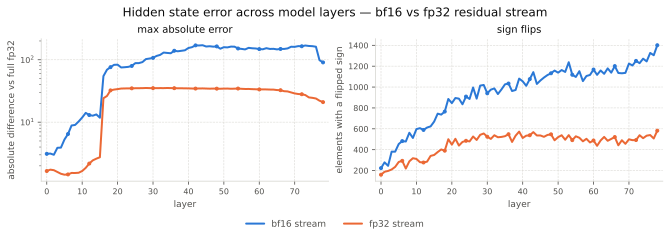
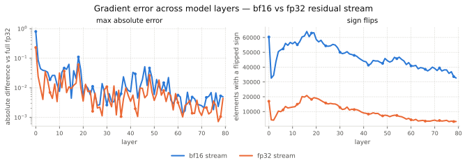
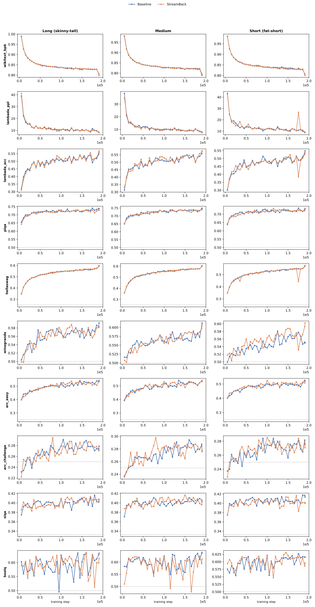

The Lost Accumulator
Accumulators are one of the most sensible components to quantization. If we repeat additions over and over, we can expect errors to accumulate and grow. This is even more concerning when the value being accumulated falls outside a the sensible range of the precision type. For example, in bfloat16, past the value 32, there are only 4 numbers that can be represented for each integer. 32, 32.25, 32.5, and 32.75. Any value that falls between these will be rounded.
In a normal LLM training, there are many accumulators. The most notable one are the weights of the model themeselves. Each training step, these accumulate a new gradient value. The same goes for the optimizer state which accumulates moments. Both of these are usually stored in full-precision, they get quantized on the fly for the forward pass. This of course are accumulators that runs for hundred of thousands of steps, rightfully so, they are stored in full precision.
Also shorter-horizon accumulators are kept in bfloat16. When using FSDP2, each rank gets a batch of data that will produce a gradient different from all other ranks. All these gradients needs to be accumulated into a single gradient (like if we performed the whole forward-backward with a far larger batch-size). This is done by performing an all-reduce operation, which sums all the gradients and distributes the result to all ranks. I actually, do not know what the "standard" here, however, I can tell you that TorchTitan defaults to float32 here which leds me to think that it may a good choice.
However, there is an accumulator that is not usually stored in full-precision---the residual stream. The residual stream accumulates the contribution of each inner attention layer and feed forward layer. On very large models with 70 or more layers, this amounts to 140 accumulations. Accumulations that may be performed in bfloat16 in the most common cases or even in float8 or nvfp4 in the more extreme cases. This accumulator is also used for gradient propagation, so it is fair to think that it may have important implications for training.
Let's start by get a sense of what it does mean to have a bfloat16 residual stream compared to a full-precision one (this is baguettotron btw). The following two figures I tracked two metrics across layers: 1) the maximum absolute error (solid), and 2) the number of sign flips (dashed). Here, the ground truth is a full-precision model, that is compared to a bfloat16 model with (orange) or without a full-precision residual stream (blue)..
Lets focus on the maximum absolute error first (solid lines). For the gradient activations (first plot), the error grows large fairily early, hitting 100 before layer 20. In the final layer it grows past 250 in the final layer. Let's compare this full-precision residual stream (orange). We can see that the error grows jumps around layer 20 to ~25, and then plateus. In the last layer, the error decreases a bit. This is only the absolute error, the large majority of activations are in reality very small with extremely small errors. Now, let's have a look at the dashed lines, which show the number of sign flips. The full-precision residual stream (orange) has a fairly small number of sign flips when compared to the bfloat16 residual stream (blue) (we are speaking of ~600 less sign flips between the two).

Now, let's see what happens on the gradients of the parameters. The maximum absolute error is much smaller as gradients in general are quite smaller. Yet, we can see clearly that the full-precision residual stream is often quite better. If we look at the number of sign flips, here the difference is far more stark. The full-precision residual stream has roughly 2x less sign flips than the bfloat16 baseline.

These are a few piece of evidence that quantizing the residual stream does impact the training dynamics a bit. This does not mean that it is necessarily a problem, but I think that it points out to something that it is worth to investigate further.
Found Accumulator
If quantizing the residual stream in bfloat16 is a problem, then we can design a few simple experiments to test this hypothesis. Let's start from a reference transformer block (llama3):
def forward(self, hidden_states, attention_masks: , positions):
hidden_states = hidden_states + self.attention(
self.attention_norm(hidden_states),
attention_masks,
positions
)
hidden_states = hidden_states + self.feed_forward(
self.ffn_norm(hidden_states)
)
return hidden_states
Here the activations flow with the same dtype in which they start. Quantizing them before we feed them to each layer is pretty easy, is it just matter of .to(torch.bfloat16 The same goes to cast the activation back to full precision just before they get integrated in the residual stream:
def forward(self, hidden_states, attention_masks: , positions):
hidden_states = hidden_states + self.attention(
self.attention_norm(hidden_states).to(torch.bfloat16),
attention_masks,
positions
).to(torch.float32)
hidden_states = hidden_states + self.feed_forward(
self.ffn_norm(hidden_states).to(torch.bfloat16)
).to(torch.float32)
return hidden_states
I need to tell you that this code is just illustrative, the actual code involves a cast just after the input embedding layer and a cast just before the output embedding layer. But apart from that this is what I used.
I imagined that the StreamBack block would be more stable than the baseline architecture in general, especially for deeper models. To test this, I designed three Llama 3 1B variants with different depth/width trade-offs:
- Skinny-Tall Llama 3: 80 layers, 1024 hidden dimension, 16 attention heads, 4 KV heads.
- Medium-Medium Llama 3: 40 layers, 1512 hidden dimension, 16 attention heads, 4 KV heads.
- Fat-Short Llama 3: 20 layers, 2048 hidden dimension, 16 attention heads, 4 KV heads.
All three baselines were trained on 100B tokens from FineWeb with an effective batch size of 500K tokens.
To keep the comparison simple, I used a standard training recipe: AdamW with a weight decay of 0.1 and a learning rate of 4e-4. The learning rate schedule follows WSD, with 2,500 warmup steps followed by 2,500 steps of cosine decay to zero.
Overall, we've got 6 model to train: for each llama3 variant, we will train with a streamback block and baseline block:
- Skinny-Tall-Baseline LLama 3
- Medium-Medium-Baseline LLama 3
- Fat-Short-Baseline LLama 3
- Skinny-Tall-Streamback LLama 3
- Medium-Medium-Streamback LLama 3
- Fat-Short-Streamback LLama 3
Results
Let's keep this blog short and jump right away to the results

Future Work
Unfortunately, I do not have the hardware for running more aggressive quantization. However, it would be interesting a comparison against more aggressive quantized data types such as MXFP8 or NVFP4 (TODO check names). We have seen that bfloat16 residual stream is more then enough to not suffer from training instabilities, at least none that matter for downstream performance. However, we may see an improvement when comparing to more aggressive quantization.